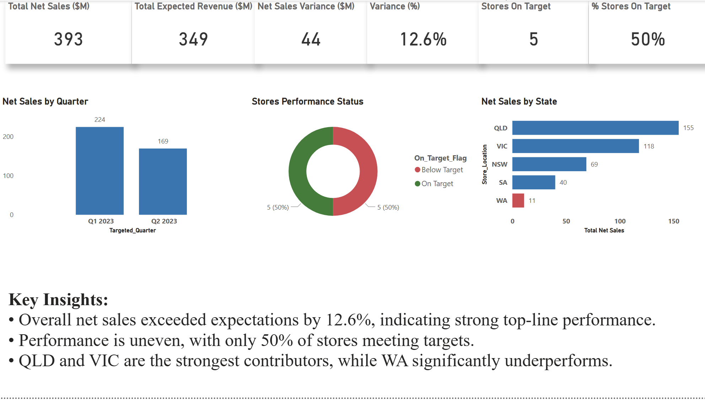

Performance Analysis
- Business Context: Retail performance analysis focused on understanding store level revenue trends, identifying underperformance, and supporting operational visibility.
- Approach: Data cleaning and validation completed in SQL, followed by KPI modelling and dashboard development in Power BI analysing Net Sales, Expected Revenue, and performance variance.
- Tools Used: SQL, Power BI, Data Modelling, KPI Reporting
- Key Insights: Store performance varies significantly across regions, with recurring underperformance highlighting opportunities for operational improvement.